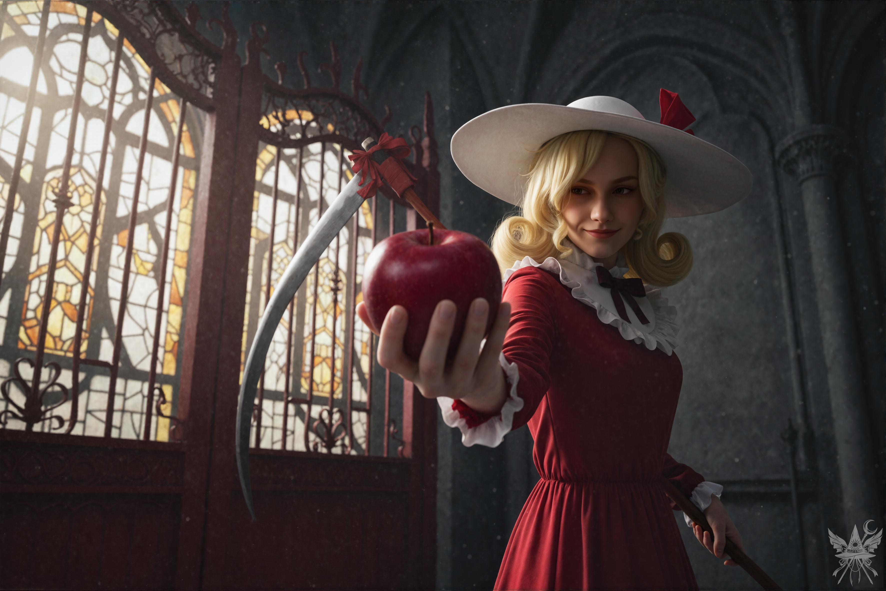

（願いは叶う。この世のすべては運命づけられており、人間に抗う術などないと信じる者もいるだろう。しかし、それは違う。強く求めれば、願いは形となる。
ただし、二つの絶対的な法則が存在する。一つは、願いが必ずしも期待通りの形で叶うとは限らないということ。大金を望んだ結果、愛する祖母の死によって遺産を相続する羽目になるかもしれない。もう一つは、願いが成就する時期は誰にも予測できないということだ。一年後か、五年後か。
あるいは、怒りに我を忘れ、世界そのものの破滅を願ってしまったとしたら。
そんなおぞましい願いでさえ、いずれは叶ってしまうのだ。）
肺が痛くなるほど冷たく澄んだ空気と、朝霧の微かな湿り気が鼻腔をくすぐる。ロートアイアンの手すりの凍てつくような冷たさが、思考を辛うじて現実へと繋ぎ止めていた。風の音すらしない絶対的な静寂。まるで、世界が息を止めて次の悲劇を待ち構えているかのようだ。
（最強の花の妖怪が棲む館のバルコニーに佇み、怒涛のように過ぎ去った出来事を反芻する。昨夜の悪夢のような裁判の記憶が脳裏に焼き付き、泥のような疲労感の中にあっても眠気は微塵も訪れない。皮肉なことに、かつて抱いたいくつかの願いが、今になって同時に叶ってしまったのだ。
生まれ育ったあの世界は、常に私に重苦しい責任感と閉塞感を与え続けてきた。人間という愚かな生き物は、取るに足らない諍いで自らを不幸のどん底に突き落とす。こんな腐りきった世界を変えるには、圧倒的な力が必要だった。だからこそ禁忌に手を染め、この異世界へと足を踏み入れた。だが、まさか地球そのものが私個人の所有物だったというオチが待っていようとは。たった三十秒間とはいえ、文字通り世界の支配者となった気分を味わうなんて、運命の悪趣味なイタズラとしか思えない。そして同時に、世界の破壊者であるという現実をも突きつけられた。
もう一つ、皮肉な形で叶ってしまった願いがある。エリスに「邪悪な魔女」と罵られたことを思い出す。他の連中も口を揃えて、私を冷酷だの疑い深いだのと評した。確かに他者とは距離を置くよう心がけているが、今の冷静沈着な自分の方がよほどマシだ。かつて、狂信的な怒りに身を任せ、哀れな人間どもとこの絶望的な世界に死を望んだあの頃の私には、もう二度と戻りたくない。
いずれにせよ、世界を「救う」以外の選択肢は残されていなかった。ハリウッド映画の薄っぺらいヒーロー気取りではない。この世界に生きる有象無象に特別な愛着などないが、第一に、地球は私の正当な所有物だ。権利の回復は当然の義務である。第二に、世界を取り戻せば、この混沌に甘んじることなく、私の理想通りにすべてを再構築できる。
判決書を見る限り、閻魔大審議会の処理は異常なほど迅速だった。月の姉妹は、事実を都合よく捻じ曲げて法的手続きを進める術に長けているらしい。キクリの署名を利用したトリックが何よりの証拠だ。だが、絶望するには早い。七日以内に四柱の創造主の署名を集めれば、判決は覆せる。神綺とキクリはすでにこちらに好意的だ。残る二人も丸め込めるはず。当然、月の姉妹もあの手この手で妨害してくるだろうが、ただ時間が限られているというだけのこと。）
判決書を見せれば、幽香には確実に嘲笑われるだろう。その予想は、朝食の席で見事に的中した。
「あらあら……。ずいぶんと面白いものを持ち帰ってきたじゃない、小娘」
豪奢なテーブルに並ぶ色とりどりの料理を前に、幽香は面白がりながらも、どこか感心したような視線を向けてきた。
「ちょっと待って、もう一度読ませてちょうだい？ ……ふふっ、たった七日間ですって！」
心底楽しそうに声を上げて笑う。
「あなた、ただの魔女じゃなかったのね。人間界の支配者ですって？ 傑作だわ。所有者だなんて！」
大きなトマトを口に放り込み、そのまま丸ごと飲み込む。
「それで？ 人間界を救うために、私に縋りに来たのかしら？」
「いえ、ただご相談したかっただけです。もし私を助けるのがご負担であれば、これまで住まわせていただいたことだけでも感謝しております」
幽香は不意に吹き出し、喉にトマトを詰まらせてひどく咳き込んだ。
「なんて可愛げのない小娘なの！ いいわ。人間界を救う気なんて微塵もないけれど、他の世界への通り道を作るくらい、造作もないことよ。遠慮なく頼みなさいな」
「ありがとうございます。夢月と幻月の世界にも繋がりますか？」
幽香はヒマワリ油で揚げたナスを優雅に頬張りながら答えた。
「ええ、夢幻世界にも行けるわ。でも、私があの二人と喧嘩するなんて期待しないでちょうだいね。あの姉妹には何も悪いことされてないし……もちろん、良いこともしてもらってないけれど」
「承知しました。ところで、他の二人の創造主がどこにいるかご存知ですか？ 例えば、この幻想郷にも……まさか、幽香様ではないですよね？」
「ちょっと待ちなさい。何それ、お世辞？ それとも私を愚弄しているのかしら。私は妖怪よ、小娘。ただの自然の精霊。お花畑のね……」
明らかな嘲りを浮かべた後、少しだけ声のトーンを落とす。
「幻想郷に創造主なんていないわ」
「でも、結界はどうなのですか？ 博麗大結界を作ったのは……」
「紫のこと？ それは本人に聞いてみればいいわ、創造主かどうかはね。どう答えるか想像するだけで笑えるけれど。名前は八雲紫。私と同じ、ただの妖怪よ。
……そうそう、閻魔については、エリーに聞いてみるといいわ。きっと面白いことを、たくさん教えてくれるはずよ」
「エリーさんが、ですか？」
「ええ。なぜあの子がいつも大鎌を抱えて、あんな嫌そうな顔をしているのか、考えたこともなかったかしら？」
残っていた緑茶を飲み干し、席を立つ。一礼して部屋を出ようとしたところで、ふともう一つの疑問がよぎった。
「幽香様、太郎くんはどうなったのでしょうか？」
「ふふっ！ まだあの玩具の心配をしているの？ 逃げ出したのよ、あの坊や。最後に『ゴジラに食われろ！』なんて喚き散らしながらね。誰のことだか知らないけれど。まあ、解放してあげたようなものね。どうせ野生の妖怪の腹に収まる運命だろうけれど……」
屋敷の正門へ向かうと、門番のエリーがいつものように巨大な鎌を携えて立っていた。

肌を刺す乾いた冷気の中、むせ返るような命の甘い香りと、こびりついた錆と血の臭いが残酷なまでに交差していた。誘惑と死の二律背反。神々しさすら帯びた気配の裏に、底知れぬ冷酷な影が張り付いている。ただの門番ではない、過去の業を背負った者特有の、美しくも危険な緊張感がそこにはあった。
「エリーさん、おはようございます」
「やあ、メデア。地獄と魔界はどうだった？ 少しは骨休めになったかい？」
「これ以上ないくらいにね。エリーさんはお元気でしたか？」
彼女のぶっきらぼうな口調に合わせ、控えめに微笑む。
「あんたのおかげで、少し暇を持て余してるよ。まあ、あの連中に悩まされずに済んでるのはありがたいけどね」
バリバリと音を立ててリンゴを平らげると、足元の箱からもう一つ取り出し、こちらへと放ってきた。
「で、何か用かい？」
受け取ったリンゴに齧りつく。
（意外に美味しい）
「あのう、エリーさん。こういう書類、見たことありますか？」
半分に折られた判決書を差し出す。
エリーは書類に視線を落とし、いくつかの箇所を読み返すと、ひどく皮肉っぽく笑った。
「……ずいぶん酷い目に遭ったじゃないか。閻魔どもは揃いも揃って頭がおかしいんだよ。あんな連中とやり合うなんて、御免こうむりたいね」
「幽香様が、エリーさんは閻魔に詳しいとおっしゃっていたので……」
「ああ、そりゃ詳しいさ。私は元死神……あいつらの番犬だったんだからね。閻魔どもは正義を振りかざしながら、いつも自分たちに都合のいいように事を運ぶ。管轄下にある十五の世界を全部支配してるつもりでいるのさ。一番厄介なのは、あいつらと議論するのは高くつくってことだ。私の力、見たろ？ でも、私はただの副官だったんだよ。あいつらには、あんたが想像もつかない規模の死神軍団がいる。どんな世界だろうと地獄に叩き落としてやるさ」
「つまり、エリーさんはもう閻魔たちの下では働いていない、ということですね？」
「察しがいいね。あいつらの腐ったシステムをあまりにも知りすぎてしまったからさ……」
芯を籠に放り捨て、次のリンゴに手を伸ばす。
「あの役人どもから少し金を巻き上げようと、法律の抜け穴を利用しようとした。でも、それが間違いだったってことに気づかされたんだよ」
「それで、裁かれたのですか？」
「ああ、経済犯罪でね。幽香様が昔のよしみで私を買い戻してくれたから、今はここで暮らしてる。といっても、召使いじゃない。ただ、こういう暮らしが性に合ってるだけさ」
「なるほど。エリーさんがうまくやっているみたいで安心しました。でも、閻魔たちとどうやって戦えばいいと思いますか？」
「正直なところ、戦わない方がいい。勝ち目はないよ。どうしても戦うってんなら、あいつらと同じように、官僚的なやり方でやるしかないね。まさか、死神軍団と戦うために、あんたも軍隊を集めるつもりじゃないだろう？」
「まあ、それも選択肢の一つです。いくつか心当たりがあるから、うまくいけば軍隊の協力を得られるかもしれませんし」
「へえ、あんたって本当に無駄な時間の使い方を知らないね、所有者さん。ただ、自分の力を過信しすぎちゃダメだよ。痛い目を見るぞ」
差し出されたもう一つのリンゴを、首を振って断る。
「忠告、感謝します。もう一つ質問してもいいですか？ 幽香様は、幻想郷には創造主がいないとおっしゃっていましたが、他に二人を見つけるにはどこへ行けばいいか、ご存知ですか？」
「うーん……創造主そのものはいないけど、その役割を担ってるのは、境界の妖怪、八雲紫ってやつだね。だけど、元々の神じゃなくて、ただの妖怪の署名を閻魔どもが受け入れるとは思えないな。まあ、紫に創造主について聞いてみたら何か教えてくれるかもしれないけど……ちょっと問題があるんだよ」
「問題、ですか？」
「あいつ、性格が最悪なんだよ。招待もなしにこの館にやってきて、今の会話を盗み聞きできないのは、私たちの幸運ってやつさ」
「まあ、性格の悪い協力者なら、これまでにもたくさん出会ってきましたから。もう慣れていますよ」
「じゃあ、頑張りな、魔女さん」
さて、次はどう動くべきか。フレデリカはまだ戻らず、居場所も知れない。誰かに相談するのも手だが、まずは戦略を練らなければ。閻魔と戦うか、法廷で争うか。どちらにせよ、キクリと神綺の協力は不可欠だ。小兎姫も正義感が強いから、力を貸してくれるかもしれない。オレンジを山へ探しに行き、ちゆりを遺跡から連れ戻すか。それとも、ここでフレデリカを待つか。
それに、カナの問題も残っている。あいつには散々振り回された。いつか決着をつけないと気が済まない。小兎姫の言葉によれば、カナを元に戻せるのは魔法店の店長、エレンだけらしい。会いに行く価値はある。
出発の準備を整えながら、持ち物を確認する。リュックサックには、ブラスター、未来を映し出す球体、ジェット箒に変身する卵、厄介な判決書、実践的悪魔学の魔導書、それに非常食のビスケットと水筒。サイドポケットには、わずかに残った魔界の通貨。訴訟費用として巻き上げられ、残金は二〇二五シンキ。手にした杖のずっしりとした重みが、心地よく掌に馴染む。
「あんた、もう出かけるわけ？」
不意に声をかけられ振り返ると、くるみが立っていた。
「まだ決めていないけれど、多分ね。何か用事？」
「一緒に来ない？ ちょうど幻想郷を散歩しようと思ってたんだけど」
「太陽の光は平気なの？」
「ホントは怖いけど、今日は曇りだし、傘もあるから大丈夫っしょ！ 行くわよ！」
[SYSTEM ALERT: 音響兵器デプロイ完了]
▼ 本章の絶望を1000%味わうための専用聴覚データ ▼
■ YouTube：『Grim Apple Swing (グリム・アップル・スウィング)』